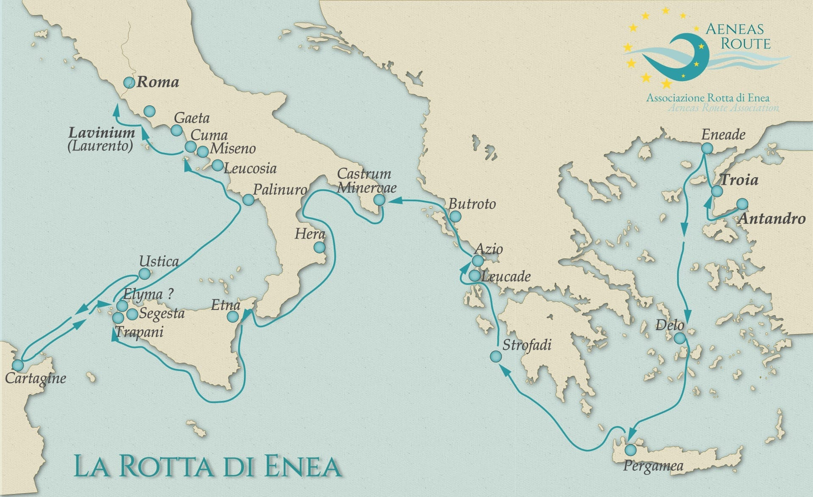

MUSEO ARCHEOLOGICO di CASTRO
Home
(current)
Catalogo
Esplora
Viaggio di Enea
Linea del tempo
Approfondisci
Le recenti scoperte dell'Archeologia a Castro
Castro, Atena, Enea (e Francesco D'Andria)
Un geologo umanista
Cerca
Home
Viaggio di Enea
Il Viaggio di Enea
Muovi il cursore sulla mappa per scoprire gli eventi più importanti del
Viaggio di Enea
